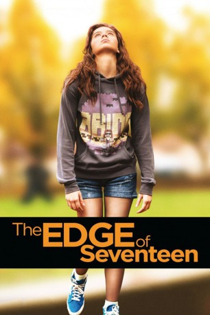
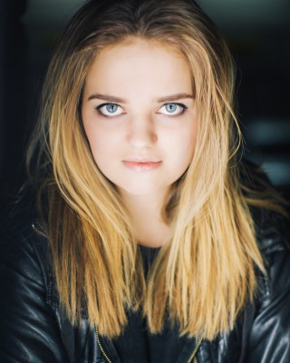

#5810 The Edge of Seventeen: Das Jahr der Entscheidung
Alternativ: The Edge of Seventeen
 
 IMDB-Wertung: 7.5 / 10
IMDB-Wertung: 7.5 / 10  Metascore: 0
Metascore: 0 
Everyone knows that growing up is hard, and life is no easier for high school junior Nadine (Hailee Steinfeld), who is already at peak awkwardness when her all-star older brother Darian (Blake Jenner) starts dating her best friend Krista (Haley Lu Richardson). All at once, Nadine feels more alone than ever, until the unexpected friendship of a thoughtful boy (Hayden Szeto) gives her a glimmer of hope that things just might not be so terrible after all.
Jahr: 2016
Dauer: 105 Minuten
FSK: 12
Land: USA Studio: STX EntertainmentTonspuren: DTS - ,
Untertitel: Deutsch,
Auflösung: 1080p (1920x1040) Größe: 6092 MB
Genre: Drama, Komödie
Regisseur: Kelly Fremon Craig
Drehbuch: Jens Becker
Soundtrack:
Darsteller:
 Hailee Steinfeld als Nadine
Hailee Steinfeld als Nadine Haley Lu Richardson als Krista
Haley Lu Richardson als Krista- Blake Jenner als Darian
 Kyra Sedgwick als Mona
Kyra Sedgwick als Mona Woody Harrelson als Mr. Bruner
Woody Harrelson als Mr. Bruner- Hayden Szeto als Erwin
- Alexander Calvert als Nick Mossman
 Eric Keenleyside als Tom
Eric Keenleyside als Tom- Nesta Cooper als Shannon
- Daniel Bacon als M.C.
- Lina Renna als Little Nadine
- Ava Grace Cooper als Young Krista
- Christian Michael Cooper als Young Darian
- Jena Skodje als Little Mean Girl Leader
- Kavandeep Hayre als Teammate
- Meredith Monroe als Greer
- Katie Stuart als Jeannie
 Chris Shields als Hospital Official
Chris Shields als Hospital Official- Christian Lagasse als Usher
- Kirsten Robek als Krista's Mom
-  Laine MacNeil als TCBY Girl
- David Hardware als Student / Soccer Player , uncredited
- Brayden Snow als School Kid , uncredited
- Josh Simpson als Teammate
- Lyle Reginald als Junior Guy
- Paul Herbert als Krista's Dad
- Laura Ward als Erwin's Friend
- Sadie Grace Adrid als School Kid , uncredited
- Peter Brown als Business Man , uncredited
- Kelsey Marsland-Anderson als Student Playing Piano , uncredited
Datei: X:\2016(A-F)\Edge of Seventeen Das Jahr der Entscheidung, The (2016, FSK12, 1920x1040).mkv seit 23.03.2017
Festplatte: HD 2016(A-Z)
 Es gibt insgesamt 147 Filme in der Gruppe '2016(A-F)'
Es gibt insgesamt 147 Filme in der Gruppe '2016(A-F)'